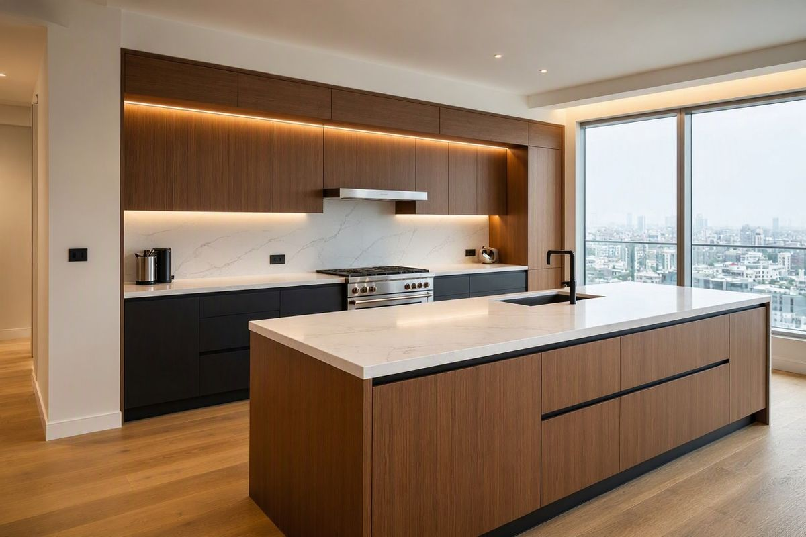
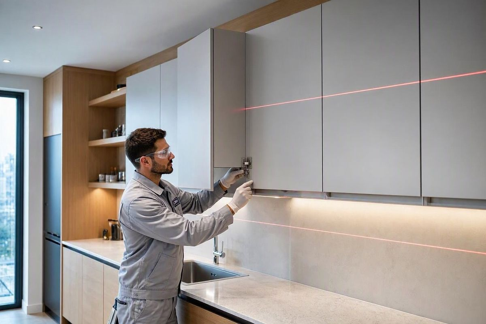
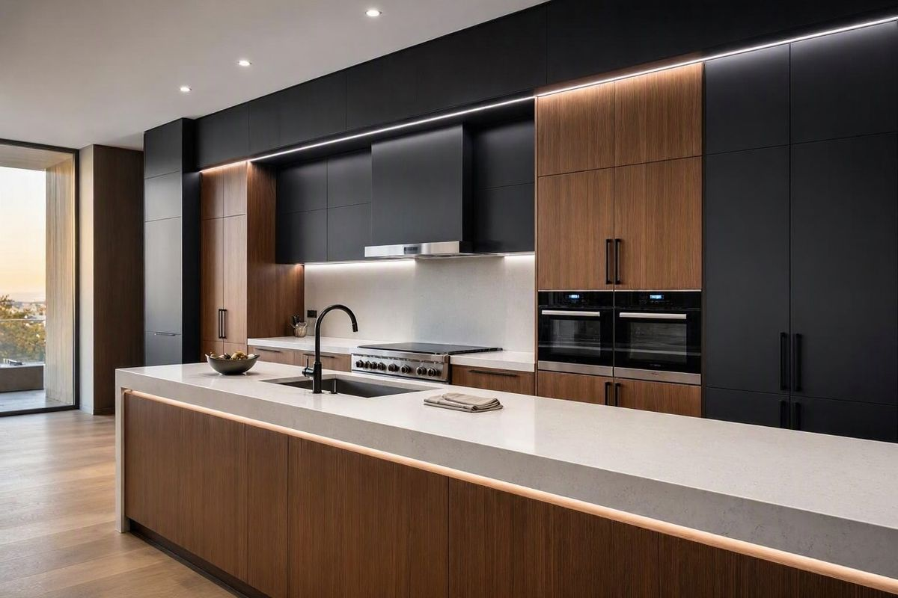

تكسّر الأدراج وتعلّقها
سحابات مكسورة، درج ينخلع أو يحتك عند الفتح، أو قاع درج هابط من الوزن.
الحل: مسارات تلسكوبية وهيدروليك جديدةأدراج مكسورة لا تنفتح؟ أبواب خزائن ساقطة أو مفصلات تالفة؟ رخام متشقق أو مطبخ تريد نقله وتركيبه؟ نحن فنيو صيانة وتركيب المطابخ بالرياض، نصلح مطابخ الخشب والألوميتال، ونركب مفصلات ومسارات هيدروليك أصلية، ونفك مطبخك وننقله ونركبه باحتراف بدون خدوش.


المطبخ هو قلب البيت، وأي خلل بسيط في درج أو باب يسبب إزعاجاً يومياً. لذلك نحرص في أبو غزل على اختيار أفضل المواد والتنفيذ المتقن والاهتمام بكل التفاصيل: من صيانة المطابخ وتجديد قطعها، إلى فكها ونقلها وتركيبها بطريقة احترافية بدون خدوش.
نعمل بميزان ليزر وقطع غيار أصلية، ونلتزم بالمواعيد، ونختبر كل باب ودرج أمامك قبل التسليم — لتحصل على مطبخ طويل الأمد وبجودة عالية.
نشخّص سبب العطل من جذوره ونستخدم قطع غيار بمقاسات مطابقة، لتحصل على مطبخ ثابت وهادئ يدوم سنوات.
سحابات مكسورة، درج ينخلع أو يحتك عند الفتح، أو قاع درج هابط من الوزن.
الحل: مسارات تلسكوبية وهيدروليك جديدةأبواب مائلة أو لا تُغلق، صوت خبط مزعج، أو براغي مخلوعة من الخشب.
الحل: مفصلات هيدروليك ناعمة الإغلاقخشب منتفخ من الرطوبة تحت المغسلة، وحواف ألوميتال مفكوكة أو صدئة.
الحل: استبدال القطع التالفة ومعالجة الرطوبةرخام متشقق، فواصل سوداء أو تسريب ماء بين السطح والجدار.
الحل: تعبئة وتلميع وسيليكون مقاوم للعفننعيد لمطبخك ثباته وهدوءه بقطع غيار أصلية وضبط احترافي لكل باب ودرج.
ننقل مطبخك من بيت لبيت ونركبه في موقعه الجديد كأنه جديد، مع حماية كاملة للقطع والجدران.
تحديثات صغيرة تُحدث فرقاً كبيراً في شكل مطبخك وسهولة استخدامه.
فريقنا يصل مجهزاً بالمفصلات والمسارات والعِدد اللازمة لإنهاء أغلب الأعطال في نفس الزيارة، ونختبر كل باب ودرج أمامك قبل التسليم.

أنا تعاملت معهم جداً محترم وخدمة ممتازة، تم توصيل المطبخ في الوقت، والعمال اللي ركّبوا المطبخ جداً نظيفين ودقيقين. أنصح بالتعامل معهم.
الله يعطيهم العافية، شغلهم مرتب ونظيف ويسألونك عن أي شي تبيه ويشكرون. صراحة والله يوفق الجميع.
خدمة وتعامل راقي واحترافي 👍👍 ألف شكر لكم على حسن التعامل والدقة في العمل والمواعيد.
نعم، نستبدل السحابات والمسارات التالفة بمسارات تلسكوبية أو هيدروليك جديدة، ونصلح قاع الدرج وجوانبه، فيعود الدرج للعمل بسلاسة دون الحاجة لتغيير المطبخ.
نعم، نركب مفصلات هيدروليك ناعمة الإغلاق بمقاسات متوافقة مع أبواب مطبخك، ونضبط محاذاة الأبواب الساقطة والمائلة في نفس الزيارة.
نعم، نفك المطبخ بعناية ونغلّفه وننقله داخل الرياض، ثم نعيد تركيبه في موقعه الجديد مع ضبط الأبواب والأدراج وتركيب الشفاط وإدخال غسالة الصحون.
نغطي جميع أحياء شمال وشرق وغرب وجنوب ووسط الرياض، ويمكنك إرسال موقعك على واتساب لتحديد أقرب موعد.
أرسل صورة للعطل أو للمطبخ عبر واتساب على الرقم 0531510418 وسنرسل لك تقديراً مبدئياً للسعر والموعد خلال دقائق.
اتصل بنا أو أرسل صورة المطبخ على واتساب، وسنوافيك بالسعر والموعد خلال دقائق.